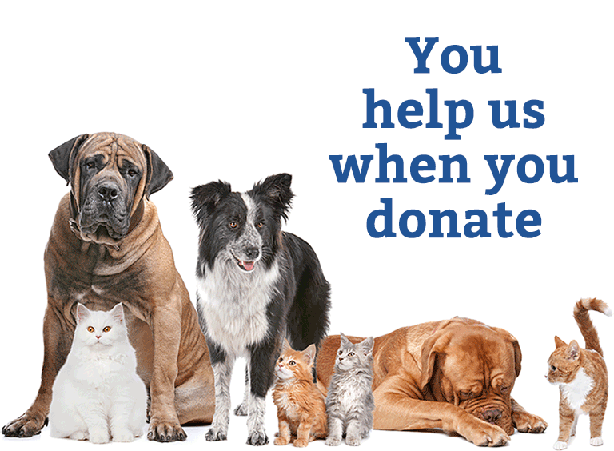

WHY DONATE?
Imagine a world where pets are free from cancer; wild species thrive with less disease; and all animals live longer, healthier lives. You can make this brighter future a reality with your donation today.
When you donate locally, you know you are truly making a difference for animals in our own community.
Give all animals access to life-saving diagnostics, treatments, preventives and even cures for the health conditions that shorten their lives and take away their time with you. Your gift will fund urgent and critically needed health studies to give dogs, cats, horses and wildlife the best chance at a healthier tomorrow.
We know the value of protecting and providing aid for these beautiful animals that are gravely in need of love and support. Many have lost the safety and security of their family and home and are sad and frightened. We urge you to consider donating or helping local animal charities when and if you can. Thank you in advance for your help!
Because your donation however big or small helps us look after and rescue hundreds or thousands of animals through our ambulance service, hospital cum shelter, sanctuary, mobile equine clinic, adoption program and other outreach programs. These animals would otherwise be left to their cruel fate and sufer silently with no respite.